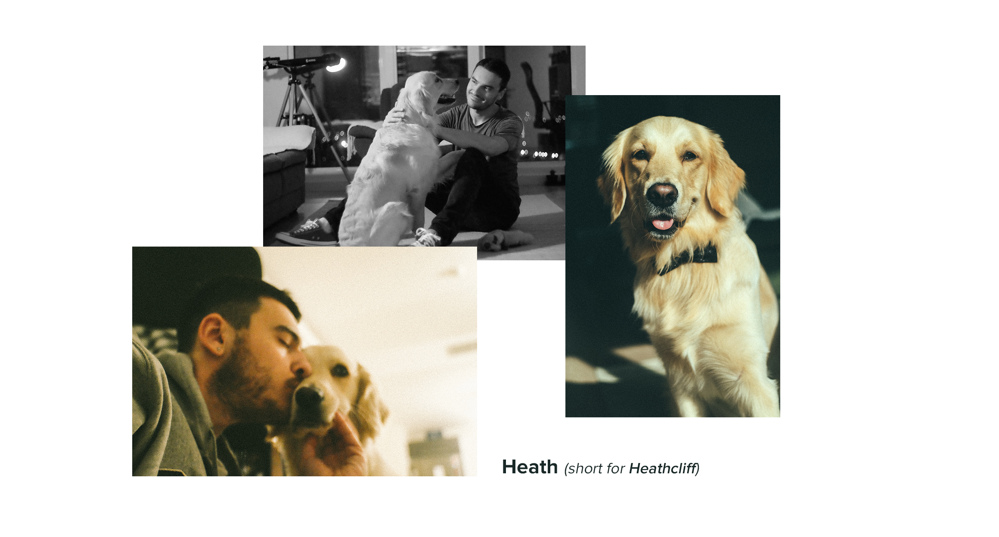

Basic Web Concepts
Introduction
Created by Jane Dimeski / @janedimeski

About Me
- Lead Designer at (since 2016)
-
Professional Trainer and Lecturer
at
(since 2015)
- Animation and Motion Graphics Artist
- UX/UI Specialist
- Software Engineer (studied Computer Science at FINKI-Skopje)
Contact info
When I'm not "ONLINE" ↓
Angela Kostadinova
- Junior .Net Developer at
-
Teaching assistant
at
Course overview
- This session is divided into 3 parts
*Spread over 44 indivudual classes or 11 sessions
Part 1 - Introduction
- Web Development Process
- Web Pages, Websites and Web Apps
- Browsers and Browser types
- HTML/CSS Documentation - How to learn
- Free discussion
Part 2 - HTML
- Introduction to HTML (HyperText Markup Language)
- HTML text content elements
- Understanding and working with hyperlinks
- Website images, formats and optimization
- Tables and table data
- Forms and form controls
- Layout elements
- Multimedia (video, audio) elements and using iFrames
- Meta data in HTML
Part 3 - CSS
- Introduction to CSS (Cascading StyleSheets)
- Working with fonts and formatting text in CSS
- CSS and color assignments
- Stylizing hyperlinks
- Understanding the box model in CSS
- CSS Positioning
- Creating different layouts with CSS
- Responsive web development
- Transitions, transformations and animations in CSS
What you need for this course
- Text Editor (Notepad, Notapad++, Brackets, SublimeText, VS Code, Atom.....)
Recommended text editor: VS Code - Web Browser (Firefox, Chrome, Edge, Safari....)
- Yourself on place!
What I need from you
- Patience - all in good time
- Individual participation and proactivity
Take part in the classes, ask questions, give feedback etc. - Hard work
Study hard, read, do homework assignments, practice what you learn, experiment etc. - Team spirit
Understanding and respect for your colleagues, landing a helping hand - Try to have fun while learning
Academy for Programming
- Online Platform for your courses: https://academyforprogramming-seavusedu.talentlms.com/index
*You will find all your courses there as you take them.
All the required materials including presentations, code exercises and any other useful resources for this course will be available there.
You can message the trainer and/or the teaching assistent directly through the platform.
We'll use this platform for sharing (and giving feedback) on your homework assignments.
Web Development Process
Web development proccess
There are a number of steps in the web development process
- Discovery Phase - Information Gathering
- Strategy Phase - Planning
- Prototyping
- Design
- Development
- Testing and Delivery/Deployment
- SEO (Search Engine Optimization)
- Maintenance

Discovery Phase
information gathering
- Purpose / Goals
- Target Audience
- Content
- Business requirements
- User scenarios
- etc.
Strategy Phase
planning
- Using the information gathered from discovery, it is time to put together a plan for the work required.
- A site map is developed.
- Design and Development plans are made
- How will the solution be hosted and maintained?
*The site map is a list of all main topic areas of the site, as well as sub-topics, if applicable. This serves as a guide as to what content will be on the site.
How many designers, developers are needed and who? How will the work be divided? How will the team communicate and collaborate? What technologies will be used? etc.
Production
prototyping, design & development
- The production cycle hugely depends on context of the project and the project itself.
- There's a huge need for good communication & collaboration between designers and developers.
Prototypes are not always needed and done.
Testing and Delivery
testing is a big part of what developers do
- Every developer has the responsibility to test their own work.
- Testing is also done on much bigger scale by dedicated testing or QA (quality assurance) teams.
- The process of getting something into production (setting the solution live on the web) is called delivery or deployment
SEO
search engine optimization
- Search engine optimization (SEO) is the process of improving the quality and quantity of online traffic to a web page, a website or a web app from search engines like Google, Bing etc.
- SEO targets the unpaid traffic (known as "natural" or "organic" results) rather than direct traffic or paid traffic.
SEO (2)
- As an Internet marketing strategy, SEO considers how search engines work, the computer-programmed algorithms that dictate search engine behavior, what people search for, the actual search terms or keywords typed into search engines, and which search engines are preferred by their targeted audience.
*Learning to write good code, following all the standards and best practices for better accessibility is a great SEO strategy in 2020.
Web maintenance
backups, health monitoring, updates etc.
- Regular backups
- Regular health monitoring checks
- Correct and on time updates of the information presented
- Regular updates of technologies used
Maintenance of our solutions is as important as their development.
Maintenance means several things:
Web maintenance (2)
Doing backups the right way is really important when working professionaly.
Backups are done by copying data to another location (physical or virtual)
General practice is to have the data on 3 different locations, so that you will be 99% sure your data is safe.
Backups can be done on a periods of time depending of the frequency of information updates.
Web Pages, Websites and Web Apps
Web Pages
- Single Document written using HyperText Markup Language (HTML)
- Hypertext is a text that contains hyperlinks that lead to other documents
- Hyperlink is a text, word, sentence, button, icon, when you click on it, you will be directed to another web page
- We access a web page by entering its URL (Uniform Resource Locator) address using a web browser
Websites
- A group of interlinked and well-structured web pages that exist on the same domain
- There are two types of websites: static and dynamic
Static Websites
- Static Websites: websites that contains only Static web pages
- Static Web Page: A document that every time it is requested displays on the browser exactly as it is stored in the server
- It doesn't change at all, unless the creator (owner) changes it manually
Dynamic Websites
- Dynamic Websites: websites that contains Dynamic web pages
- Dynamic Web Page: Web pages that are generated using scripting languages and programs interacting with a database on the server side
- Programs that add, restrict, edit or remove data without the creator's intervention

- There are more than billion websites available on web today Check the Live Stats
Web Apps
- Web Apps: A software application/program that exists on the server and runs using a web browser, through a web page
- Created using a combination of programming languages and web application frameworks
*it may use the RAM, allows for user interaction and it's designed for many uses
*the Web Pages are generated using scripts and programs

Dynamic websites vs. Web Apps
Dynamic Websites
- Allows the user to interact and add content
- The creator's content is the dominant
- They are less complicated and need less skills than web apps do
Dynamic websites vs. Web Apps
Web Apps
- Web Apps are based on user engagement
- Almost all their content is from the end user
- Web Apps are similar to desktop apps
- They are more complicated and need more skills than websites do
Web Browsers
Web Browsers
Web browsers are software applications installed on your device that helps you browse the Web.
Note: You can build your own Web Browser if you know how to code.
Popular Web Browsers:
Web Browsers (2)
Less Popular Web Browsers:
- Konqueror
- SeaMonkey
- MaxhtonBrowser
- KidZui
- RockMelt
- Iron Browser
- Sleipnir
3 Questions
Web Browsers
- What browser are you using?
- What browser do you think it's the best one?
- What browser should we use as web developers?
W3C
World Wide Web Consortium
W3C
W3C stands for World Wide Web Consortium which is an international consortium of companies and organizations involved with the Internet and the Web.
The W3C was founded in 1994 by Tim Berners-Lee, the original architect of the World Wide Web
The organization's purpose is to develop open standards so that the Web evolves in a single direction rather than being splintered among competing fractions
The W3C is the chief standards body for HTTP, HTML and CSS
http://www.w3.org/How we learn
we follow official documentation
- Web Design & Applications standards: https://www.w3.org/standards/webdesign/
- MDN web docs: https://developer.mozilla.org/en-US/
BONUS: Watch this TED Talk
How do you start?
How do you start?
You've learned about the basics of the Web
Now you are ready to go deeper into building web pages, websites and later web apps.